Jersey Design
Apparel Design & Graphic Design
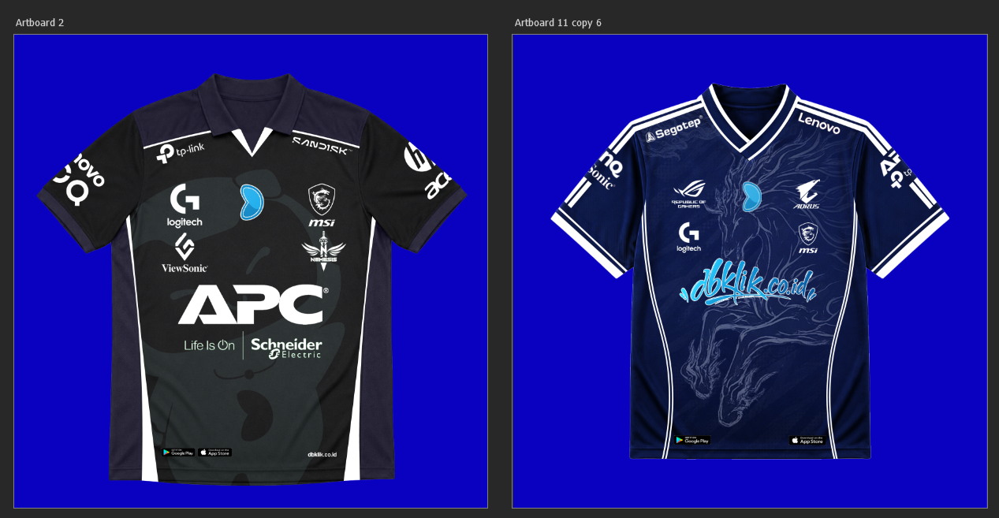
Perancangan jersey olahraga dan apparel team dengan elemen grafis kustom, tipografi dinamis, dan konsep visual yang bold. Proyek ini menekankan identitas visual team yang kuat melalui warna, layout grafis, dan detail kustom yang membuat jersey tampil menonjol di lapangan maupun di luar lapangan.
Konsep visual mengedepankan bold typography dan komposisi grafis yang dinamis. Penggunaan warna kontras dan hierarki elemen disusun agar identitas team terbaca jelas dengan jarak aman, ukuran elemen, dan penempatan grafis yang dipikirkan untuk berbagai ukuran jersey serta hasil cetak yang presisi.
Dari ide hingga hasil cetak
Concept
Menentukan identitas team, tema visual, dan elemen grafis utama.
Sketch
Membuat sketsa kasar komposisi, tipografi, dan penempatan logo di jersey.
Design
Menyusun desain digital dengan vektor, palet warna, dan detail kustom.
Final
Finalisasi file siap cetak dengan proporsi dan detail yang presisi.
PC Poster
PC Poster for Company Portofolio, Etc
Desain poster dengan headline kuat dan komposisi tipografi yang dinamis. Layout disusun agar pesan utama terbaca jelas, dengan hierarki visual yang tegas dan accent warna sebagai penekanan.
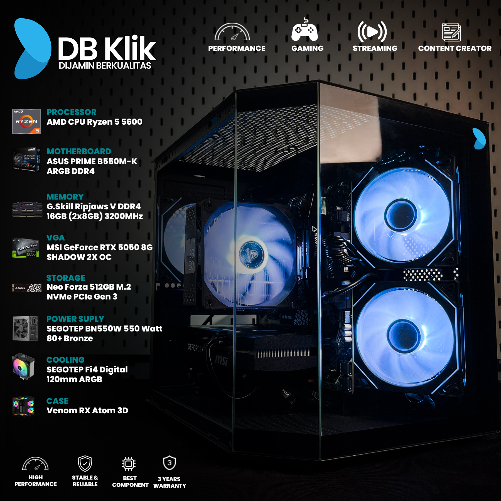
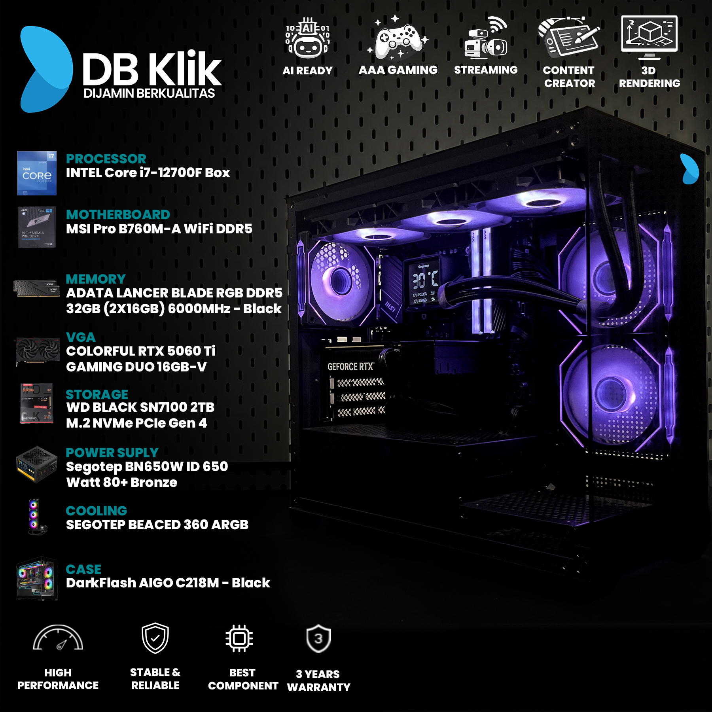
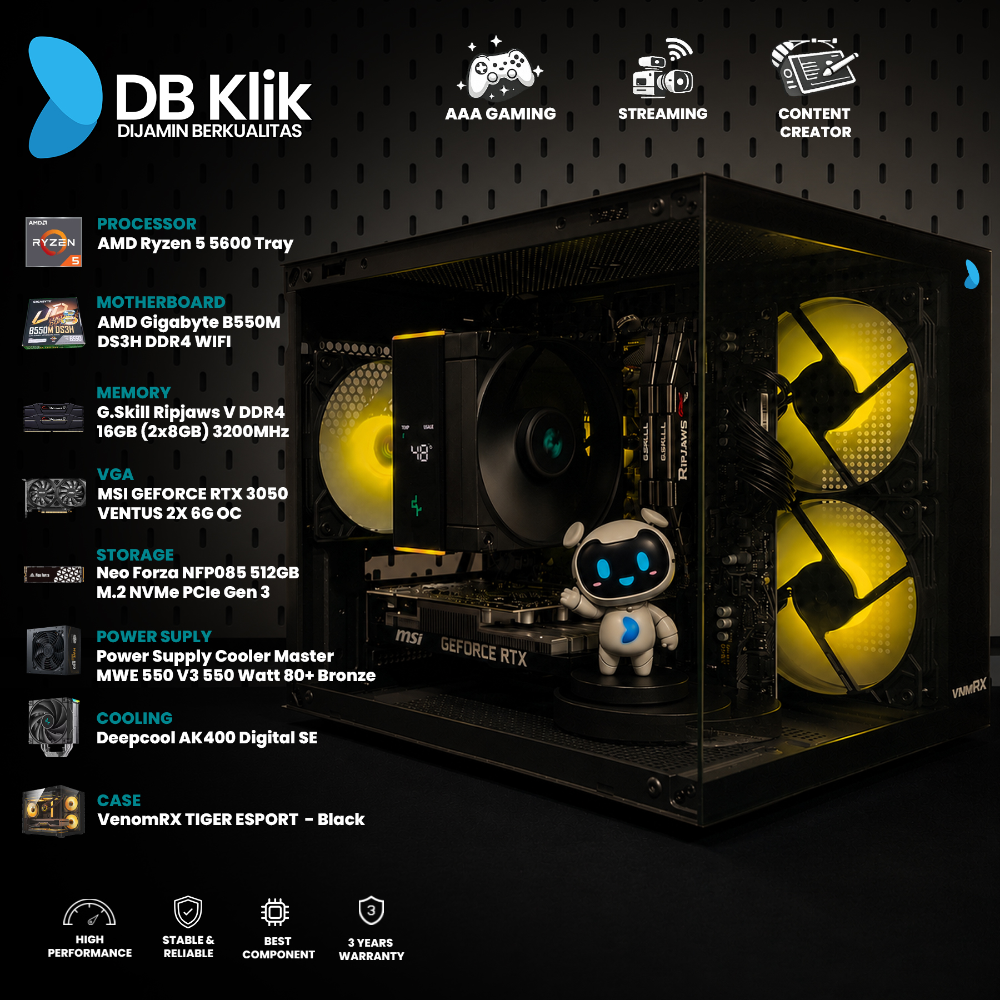
Perancangan poster dengan headline kuat dan komposisi tipografi yang dinamis. Proyek ini menekankan hierarki visual yang tegas, penyampaian pesan yang jelas, serta penggunaan accent warna sebagai penekanan agar poster tampil menonjol baik di media cetak maupun digital.
Konsep visual bertumpu pada bold typography, grid yang teratur, dan kontras warna yang kuat. Elemen grafis disusun secara editorial dengan whitespace yang seimbang, sehingga headline menjadi pusat perhatian dan informasi pendukung tetap mudah dibaca.
Dari ide hingga poster final
Concept
Menentukan pesan utama, audiens, dan arah visual poster.
Sketch
Membuat sketsa komposisi, grid, dan penempatan headline.
Design
Menyusun desain digital dengan tipografi, warna, dan elemen grafis.
Final
Finalisasi file siap produksi dengan proporsi dan detail presisi.
Poster
Poster Education, Promotion, Etc
Koleksi desain poster dengan headline kuat, komposisi tipografi dinamis, dan hierarki visual yang tegas untuk menyampaikan pesan secara jelas dan menonjol di media cetak maupun digital.
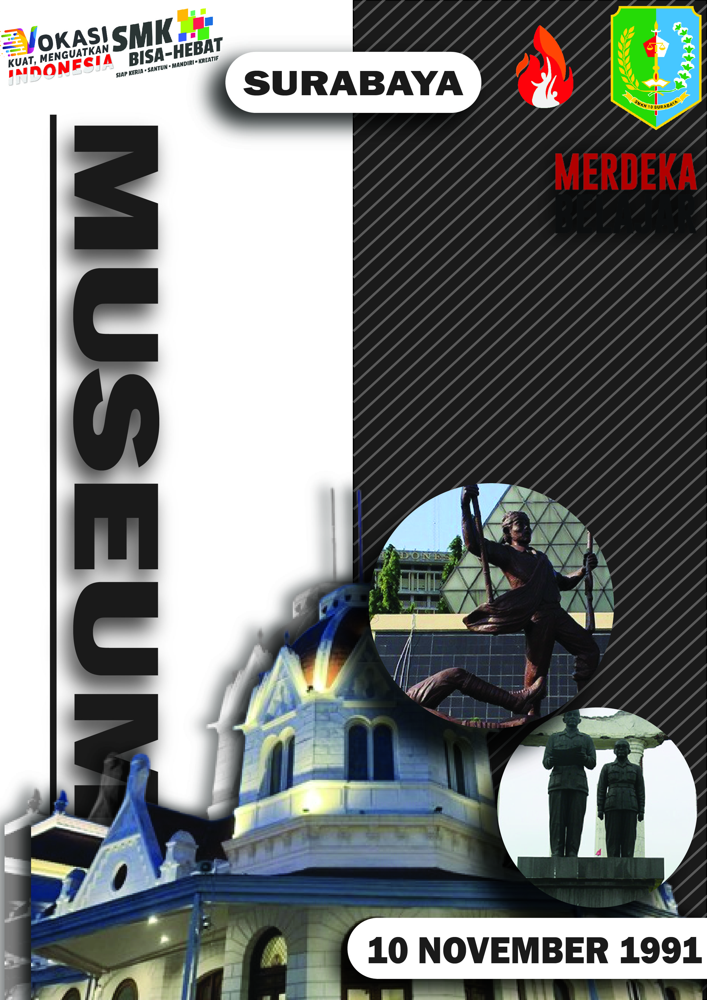
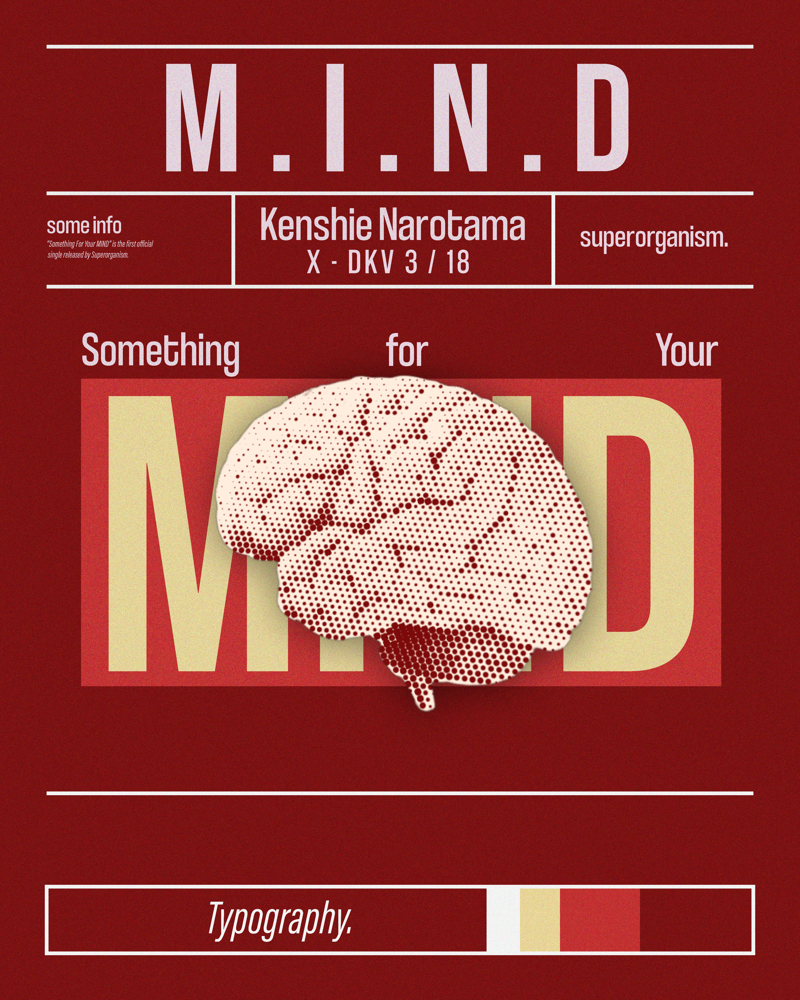
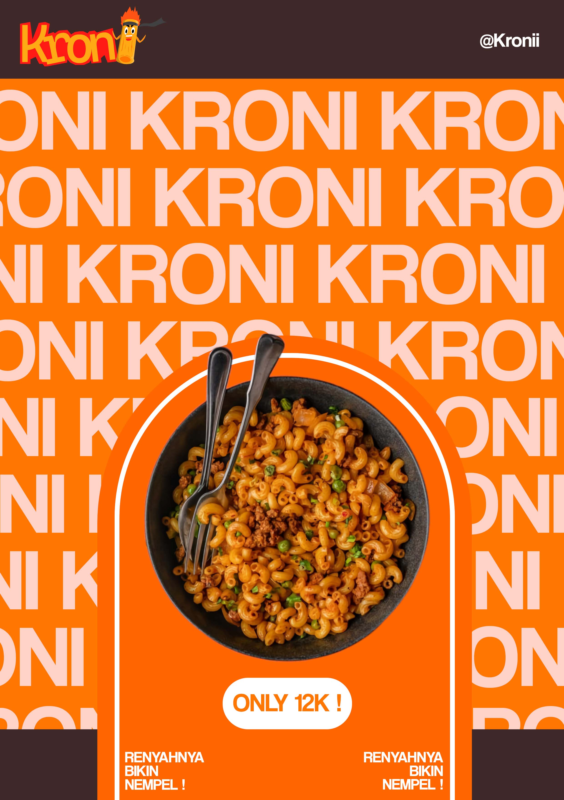
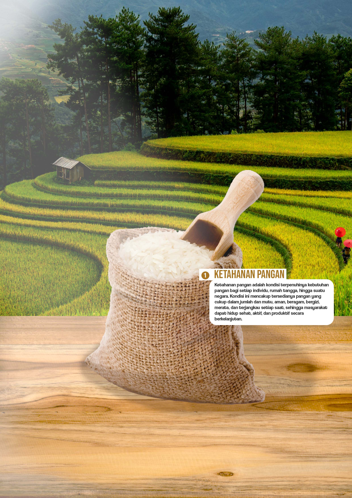
Koleksi desain poster yang menitikberatkan pada headline kuat, komposisi tipografi dinamis, dan hierarki visual yang tegas. Setiap poster dirancang agar pesan utama mudah dipahami dan tampil menonjol, baik di media cetak seperti print maupun di media digital.
Konsep visual bertumpu pada bold typography, grid yang konsisten, dan kontras warna yang kuat. Elemen grafis disusun secara editorial dengan whitespace seimbang sehingga headline menjadi pusat perhatian, sementara informasi pendukung tetap mudah dibaca.
Dari ide hingga poster final
Concept
Menentukan pesan utama, audiens, dan arah visual poster.
Sketch
Membuat sketsa komposisi, grid, dan penempatan headline.
Design
Menyusun desain digital dengan tipografi, warna, dan elemen grafis.
Final
Finalisasi file siap produksi dengan proporsi dan detail presisi.
Digital Character
Character Design & Digital Illustration, Etc
Perancangan karakter digital dengan identitas visual yang kuat, ekspresi yang jelas, dan detail ilustrasi yang dikerjakan secara digital dari sketsa hingga final.
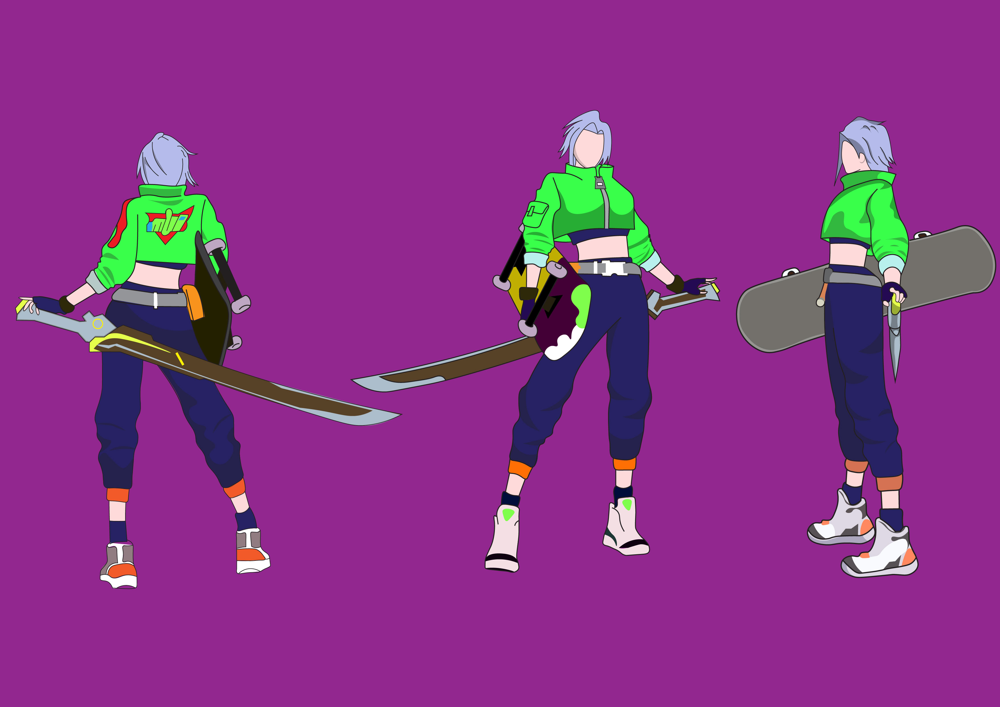
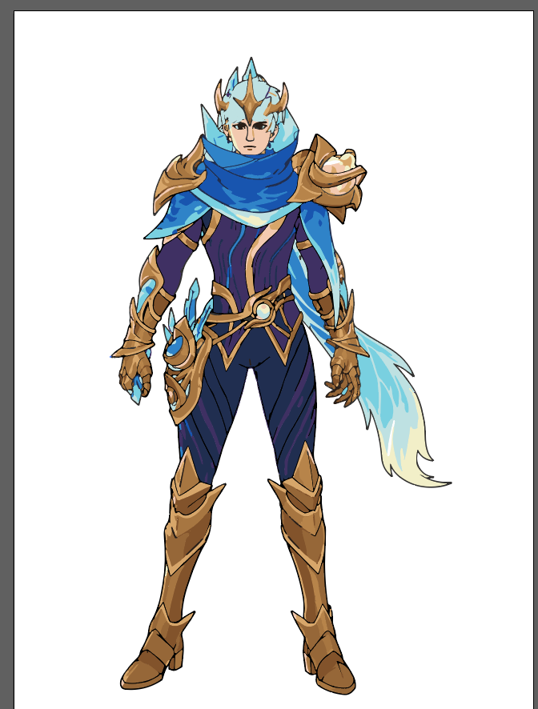
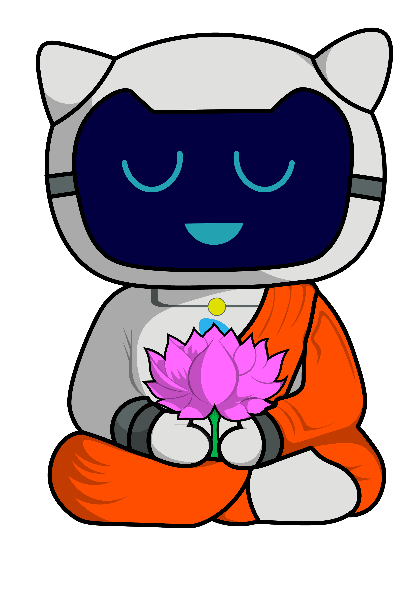
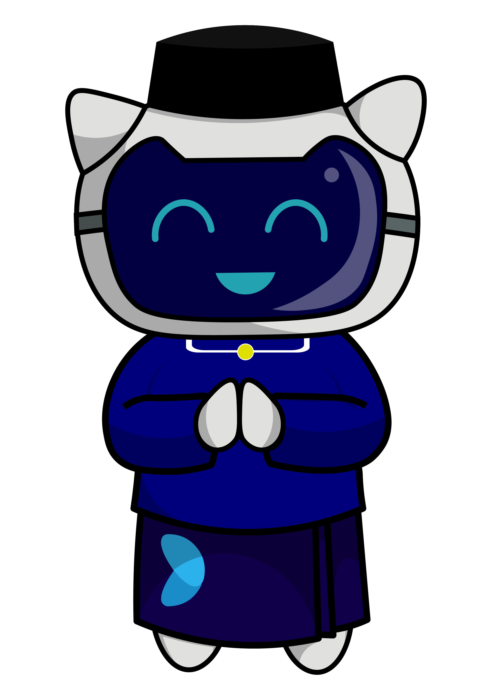
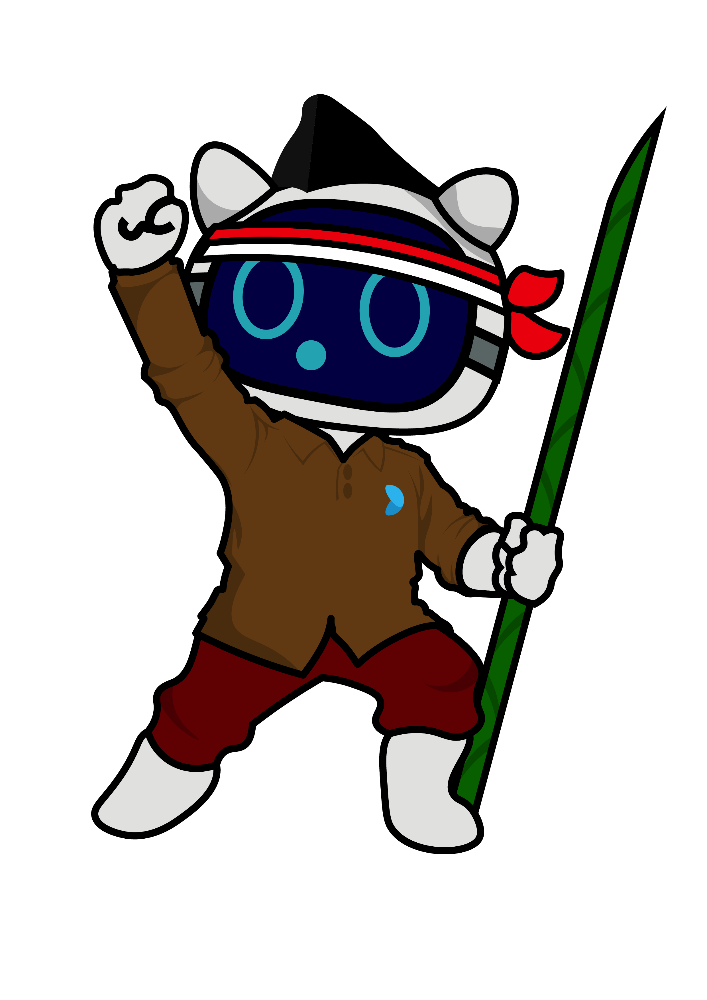
Perancangan karakter digital yang menekankan identitas visual kuat, ekspresi jelas, dan storytelling melalui desain. Setiap karakter dikembangkan dengan konsistensi bentuk, warna, dan detail agar mudah dikenali dan digunakan dalam berbagai media.
Konsep visual bertumpu pada siluet yang kuat, palet warna yang terarah, dan ekspresi yang komunikatif. Karakter dirancang dari riset kepribadian dan proporsi, lalu diterjemahkan ke dalam ilustrasi digital yang rapi dan konsisten.
Dari konsep hingga karakter final
Concept
Menentukan kepribadian, tema, dan arahan visual karakter.
Sketch
Membuat sketsa proporsi, siluet, dan ekspresi karakter.
Design
Menyusun ilustrasi digital dengan warna dan detail yang konsisten.
Final
Finalisasi karakter siap digunakan di berbagai media.
Banner
Banner Design, Etc
Desain banner dengan komposisi visual yang jelas dan pesan yang mudah terbaca. Elemen tipografi, warna, dan grafis disusun seimbang agar banner kuat sebagai media promosi di berbagai ukuran dan penempatan.
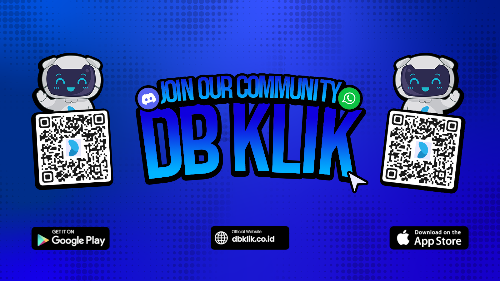
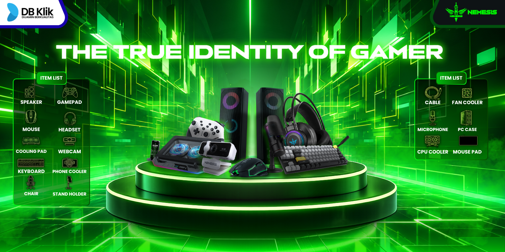
Desain banner yang menitikberatkan pada hierarki pesan yang jelas dan komposisi visual yang seimbang. Proyek ini menekankan keterbacaan teks, pemilihan warna yang kontras, dan penempatan elemen grafis agar banner tampil efektif sebagai media promosi.
Konsep visual bertumpu pada tipografi yang kuat, palet warna yang terarah, dan whitespace yang seimbang. Setiap elemen disusun secara modular agar pesan utama terbaca cepat, sementara detail pendukung memperkuat kesan visual banner secara keseluruhan.
Dari konsep hingga banner final
Concept
Menentukan pesan utama, audiens, dan arahan visual banner.
Sketch
Membuat sketsa komposisi, grid, dan penempatan headline.
Design
Menyusun desain digital dengan tipografi, warna, dan grafis.
Final
Finalisasi banner siap produksi dengan detail presisi.
Graphic Design — Kumpulan karya mulai dari jersey, poster, hingga karakter digital dengan konsep visual yang bold dan komposisi yang tegas.
arrow_backBack to Selected Works